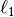
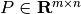
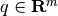
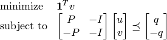
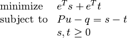
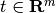

L1-norm approximation¶
The -norm approximation problem is given by
(1)
with variable and problem data  and . The problem is equivalent to an LP
(2)
with  variables and constraints. Yet another
equivalent formulation is the problem
variables and constraints. Yet another
equivalent formulation is the problem
(3)
with variables , , and .
Documentation
A custom solver for the -norm approximation problem is available as a Python module l1.py. The module implements the following four functions:
- l1blas(P, q)¶
Solves the problem (2) using a custom KKT solver. This function implements the same custom KKT solver as l1(), but it uses BLAS routines instead of overloaded arithmetic.
Returns the solution .
Example
from l1 import l1
from cvxopt import normal
m, n = 500, 100
P, q = normal(m,n), normal(m,1)
u = l1(P,q)